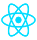
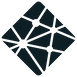

Why and How This Project Was Created
Many companies and agencies are leaving money on the table by using and building WordPress blogs. Modern technologies like the ones used in this project make building beautiful custom blog and portfolio sites simple, fast, and free!
I built this website using React.js, Sanity (headless CMS), Tailwind CSS, and used Netlify for hosting.
React was the obvious choice to build this project upon because it allows for quick rendering, as well as a clean component-based coding structure.
Sanity, an extremely powerful and flexible content management system, was used as the backbone for this website. It allowed me to create a completely custom and user-friendly content management dashboard. Any updates or new content that clients add from their Sanity studio dashboard will be rendered on their website immediately. Plus it’s free for up to three users!
Tailwind CSS is a simple CSS framework that I decided to implement in this project to quickly and efficiently build an eye-catching user interface (UI). As a utility-first CSS framework it provides more flexibility than other frameworks, like Bootstrap, but still allows for a quick UI build.
Finally, I chose Netlify for hosting because it provides free hosting, a free SSL certificate, continuous deployment from GitHub (where the code is hosted), and their global CDN which makes for a speedy website regardless of the user’s location.
 (Screenshot of custom Sanity studio)
(Screenshot of custom Sanity studio)
Technologies Used
React.js
Sanity
Tailwind
CSS
Netlify
What I Learned / Reflection
This was the first full-fledged project that I built using React. I gained a tremendous amount of knowledge utilizing React, including the implementation of React Hooks and React-Router. Integrating the headless CMS, Sanity, proved more challenging than I initially anticipated, however, I managed to get everything working properly. This was also the first time that I worked on a project across multiple devices, so it helped me gain a more in-depth understanding of Git and GitHub and proved to me just how powerful version control truly is. This was also my first time using the Tailwind CSS framework and Netlify for hosting.
Now that I have a better understanding of React, I feel more empowered to create larger projects using it in the future. I would like to dive more into the Tailwind CSS framework and utilize the customizations it offers because in this project I chose to stick with the built-in classes and I feel that the user interface could be improved. Netlify is an amazing hosting platform that was simple to use and it is definitely my new go-to for hosting static sites. Likewise, Sanity will be my choice for any future projects that require a content management system.